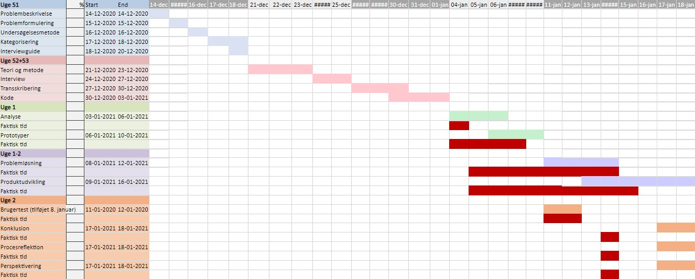
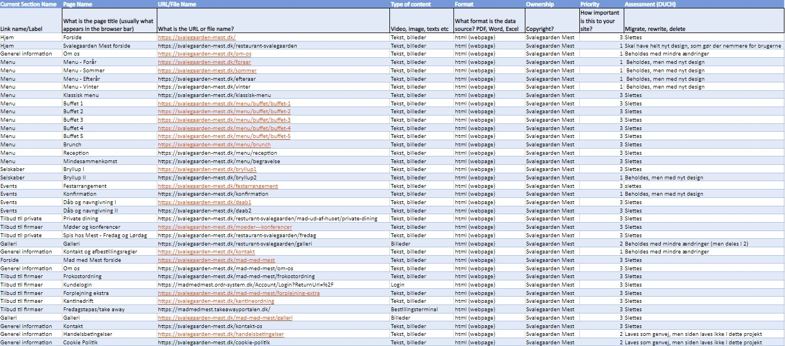

Back to cases
Svalegaarden Mest
Svalegaarden Mest was my first exam project, and was focused on creating a website that lived up to the qualities presented by the company. Currently they have a 2 in 1 website, and our task was to create the B2C part of the website, creating a more coherent site, and reworking the design and information architecture based on material received from the company.
You can use the tabs below to see the different steps i had a part to play in.
Project management
This project was managed by first making Work Breakdown structure, to better get an overview of the individual assignments in the project. Thereafter I could arrange the tasks in an order after their dependencies, and place them in a gantt-diagram, which can be seen below.
Information architecture
To figure out how to make the information architecture best manageable, I started off by making a content inventory. This way it was easier for me to get an overview over what needed to be changed, deleted or kept as it was.
From this we could make an interview guide with questions relevant for creating the website.
User analysis
In order to get an idea of the
general target audience, a series
of user analysis was conducted.
First off i analysed the material
that we were given for the project,
since we didn't have a costumer
meeting.
In the material was a strategic brief,
with a colorscheme, font styles,
pictures and a chart of qualities that
they wanted the website to communicate
to the costumers - these were mostly
focused on luxury and maturity.
After analysing the interview, I could see a series of patterns, revealing what the costumers focused on; these involved quality over price, wide selection of food and manageable information. These 3 central themes would later help us build the prototypes.